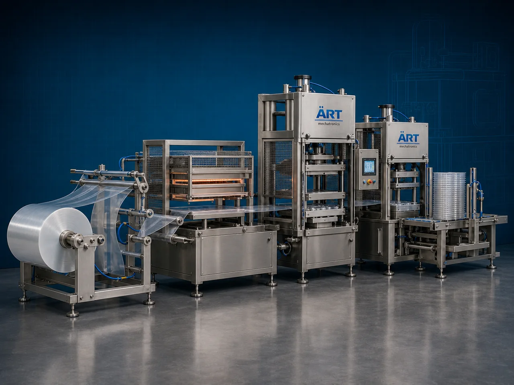

Cup & Tray Forming Machine (Automatic Thermoforming System)
A Cup & Tray Forming Machine, also known as a Thermoforming Machine, Cup Forming Machine, Tray Forming Machine, or Automatic Plastic Container Forming System, is an advanced industrial packaging solution designed for automatic sheet feeding, heating, thermoforming, molding, cutting, stacking, and high-speed production operations for cups, trays, disposable containers, food packaging trays, beverage cups, dairy cups, and retail packaging products.

About the Cup & Tray Forming Machine
Cup and tray forming systems are widely used for:
- Food tray forming
- Beverage cup manufacturing
- Dairy cup production
- Disposable tray forming
- Plastic container manufacturing
- Packaging tray production
- Retail food packaging container manufacturing
- Thermoformed packaging applications
The machine improves:
- Production speed
- Product consistency
- Packaging quality
- Material utilization efficiency
- Production automation
- Product hygiene
- Manufacturing efficiency
Industrial cup & tray forming machines use:
- Automatic plastic sheet feeding systems
- Servo synchronized thermoforming systems
- PLC and HMI automation controls
- Precision heating and molding stations
- Automatic cutting and stacking systems
to automatically form cups and trays with superior dimensional accuracy and high production efficiency.
Cup & tray forming machines are widely used in industries such as:
Food packaging industries Beverage industries Dairy industries Disposable packaging industries Ready meal packaging industries FMCG industries Retail packaging industries Plastic packaging industries
where hygienic packaging, mass production, and premium packaging quality are essential.
The machine is highly suitable for:
- Yogurt cup forming
- Beverage cup manufacturing
- Food tray forming
- Disposable tray production
- Packaging container manufacturing
- Retail packaging applications
ART Mechatronics offers high-performance cup & tray forming machines, engineered for continuous industrial operation, precision thermoforming performance, hygienic manufacturing quality, and reliable long-term production automation.
Working Principle of Cup & Tray Forming Machine
- 1. Plastic Sheet Feeding Plastic sheet or rollstock material is automatically fed into thermoforming section through servo synchronized systems.
- 2. Heating & Thermoforming Process Machine heats plastic material and forms cups or trays using precision molds and vacuum/pressure forming systems.
Advanced thermoforming technology ensures accurate shaping and consistent product quality.
- 3. Cup & Tray Forming Operation Machine produces: ✔ Food trays ✔ Beverage cups ✔ Yogurt cups ✔ Disposable trays ✔ Retail packaging containers ✔ Ready meal trays ✔ Dairy cups
accurately and continuously.
- 4. Cutting & Trimming Process Machine performs: Precision cutting Edge trimming Scrap separation Smooth finishing operations
for premium packaging quality and dimensional accuracy.
- 5. Stacking & Automation Integration Optional systems include: Automatic stacking Robot pick-and-place systems Counting systems Conveyor integration Quality inspection systems
- 6. Finished Product Discharge Finished cups and trays discharged automatically for: Packaging operations Filling lines Retail packaging applications Dispatch handling
Types of Cup & Tray Forming Machines
- 1. Cup Thermoforming Machine Designed for: ✔ Beverage and dairy cup manufacturing applications
- 2. Food Tray Forming Machine Suitable for: ✔ Ready meal and food packaging tray production systems
- 3. Disposable Container Forming Machine Uses: ✔ Disposable packaging and retail container manufacturing systems
- 4. Vacuum Thermoforming Machine Designed for: ✔ Precision thermoformed packaging production systems
- 5. Servo Driven Forming Machine Suitable for: ✔ Precision high-speed thermoforming operations
- 6. Fully Automatic Cup & Tray Forming System Designed for: ✔ Complete industrial thermoforming automation lines
Industries Using Cup & Tray Forming Machines
🍱 Food Packaging Industry Food trays, ready meal containers, and retail packaging tray manufacturing systems. 🥤 Beverage Industry Cold drink cups, juice cups, and disposable beverage container production systems. 🥛 Dairy Industry Yogurt cups, dairy packaging containers, and chilled product cup manufacturing systems. 🛒 FMCG Packaging Industry Retail packaging containers and consumer packaging tray production systems. 🍮 Dessert Industry Dessert cups, pudding trays, and sweet product packaging container manufacturing systems. 🏪 Disposable Packaging Industry Disposable plastic cups, trays, and food service container manufacturing systems.
Features & Advantages
- High-speed automatic cup and tray forming operation
- Precision thermoforming and molding systems
- Hygienic and high-quality packaging production
- PLC and servo automation control systems
- Improves production consistency and efficiency
- Reduces material wastage and labor dependency
- Supports multiple cup and tray sizes
- Reliable long-term industrial performance
- Smooth and continuous manufacturing operation
Technical Highlights
Machine Type: Automatic cup and tray forming machine Industrial thermoforming system Plastic container forming machine Material Compatibility: PET sheets PP sheets PS sheets PVC sheets Food-grade thermoforming materials Forming Integration: Vacuum forming systems Pressure forming systems Precision mold systems Features: PLC control system Servo synchronization Touchscreen HMI Automatic cutting systems Automatic stacking systems Applications: Food trays Beverage cups Dairy cups Disposable containers Retail packaging trays Automation: Semi-automatic Fully automatic industrial systems
Turnkey Cup & Tray Forming Solutions
ART Mechatronics offers: Complete thermoforming systems Automatic cup and tray production solutions Packaging automation integration systems Conveyor synchronization systems Installation & commissioning After-sales service & AMC
Why Choose Art Mechatronics
Expertise in industrial packaging and automation systems Customized thermoforming solutions for multiple industries High-performance and precision forming technology Advanced PLC and servo automation systems Proven industrial packaging performance across sectors
Applications
Food Packaging Industries Beverage Container Manufacturing Plants Dairy Packaging Industries Disposable Packaging Manufacturing Units Retail Packaging Industries FMCG Packaging Plants
Get pricing & specs for the Cup & Tray Forming Machine
Share the product, target capacity, current process and plant location. These details help our engineers discuss the right machine or line configuration.
One partner, from design to start-up
ART Mechatronics designs, manufactures, installs and commissions your Cup & Tray Forming Machine solution with regional presence in India, UAE and Thailand.